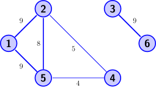
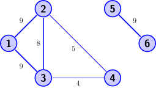

Exercises
Contents
Exercises#
k-means#
Compute a 2-means clustering on the movie rating matrix from the lecture step by step:
\[\begin{align*} D = \begin{pmatrix} 5 & 3 & 1 & 1 \\ 3 & 1 & 5 & 3 \\\ 2 & 1 & 5 & 3 \\ 4 & 3 & 4 & 2\\ 5 & 5 & 3 & 1 \\ 3 & 1 & 5 & 3 \\ \end{pmatrix}. \end{align*}\]You can use as initialization the centroids
\[\begin{align*} X_0^\top = \begin{pmatrix} 5 & 3 & 1 & 1\\ 3 & 1 & 5 & 3\\ \end{pmatrix}. \end{align*}\]In the first step, we assign every point to the cluster having the closest centroid. That is, we check, for every data point \(D_{j\cdot}\) if \(\lVert X_{\cdot 1} - D_{j\cdot}\rVert^2 < \lVert X_{\cdot 2} - D_{j\cdot}\rVert^2 \). If the answer is yes, then we set \(Y_{j1}=1\) and \(Y_{j2}=0\). Otherwise, we do it the other way round: \(Y_{j1}=0\) and \(Y_{j2}=1\). This yields the cluster assignment matrix:
\[\begin{align*} Y_0 = \begin{pmatrix} 1 & 0\\ 0 & 1\\ 0 & 1\\ 0 & 1\\ 1 & 0\\ 0 & 1 \end{pmatrix}. \end{align*}\]Now we update the centroids and compute the mean value of the data points which are in one cluster. For example, the first data point is the only point which is assigned to the first cluster, hence the new centroid of the first cluster will be that one point. The centroid of the second cluster is the mean of all remaining data points.
\[\begin{align*} X_1^\top = \begin{pmatrix} 5 & 4 & 2 & 1\\ 3 & 1.5 & 4.8 & 2.8\\ \end{pmatrix}. \end{align*}\]Now we update again the cluster assignments and get
\[\begin{align*} Y_1 = \begin{pmatrix} 1 & 0\\ 0 & 1\\ 0 & 1\\ 0 & 1\\ 1 & 0\\ 0 & 1 \end{pmatrix}. \end{align*}\]Since \(Y_1=Y_0\), we have converged and we get the clustering identified by the matrices \(X_1\) and \(Y_1\).
Show that for \(Y\in\mathbb{1}^{n\times r}\) we have
\[\begin{split}Y^\top Y = \begin{pmatrix} \lvert Y_{\cdot 1}\rvert & & \vvec{0}\\ & \ddots & \\ \vvec{0}&& \lvert Y_{\cdot r}\rvert \end{pmatrix}.\end{split}\]The non-diagonal entries \((Y^\top Y)_{st}\) for \(1\leq s\neq t \leq r\) are equal to zero due to the constraint that there is only one nonzero entry in every row of \(Y\). We have:
\[\begin{align*} (Y^\top Y)_{st} = Y_{\cdot s}^\top Y_{\cdot t} = \sum_{i=1}^n Y_{is}Y_{it} = 0, \end{align*}\]since at most one of the entries \(Y_{is}\) or \(Y_{it}\) is equal to one, and the other has to be equal to zero.
The diagonal entries of \(Y^\top Y\) are equal to
\[\begin{align*} (Y^\top Y)_{ss} = Y_{\cdot s}^\top Y_{\cdot s} = \sum_{i=1}^n Y_{is}Y_{is} = \sum_{i=1}^n Y_{is} = \lvert\mathcal{C}_s\rvert. \end{align*}\]Since \(Y\) is a binary matrix, we have \(Y_{is}^2 = Y_{is}\) and as a consequence we also have \(\lVert Y_{\cdot s}\rVert^2 =\lvert Y_{\cdot s}\rvert\). The column vector \(Y_{\cdot s}\) contains as many ones as there are points assigned to cluster \(s\), hence we get the result as outlined in the equation above.
Spectral Clustering#
Consider the following graph:

Denote the weighted adjacency matrix of this graph, where column \(i\) corresponds to node \(i\).
The graph has two connected components. Find a reordering of the nodes, such that the corresponding weighted adjacency matrix has a block-diagonal structure.
Compute the within cluster similarity and the cut, when the clusters are equal to the connected components:
\[\begin{align*} Sim(Y;W) &= \tr(Y^\top W Y (Y^\top Y)^{-1})\\ Cut(Y;W) & = \tr(Y^\top W (\mathbf{1}-Y) (Y^\top Y)^{-1}) \end{align*}\]
The weighted adjacency matrix is
We numerate the nodes such that the nodes within the connected components have subsequent numbers.

The corresponding weighted adjacency matrix has now a block-diagonal structure:
We use the notation of the previous question, where the adjacency matrix has a block-diagonal structure. The cluster indicator matrix is then given by
Then we have